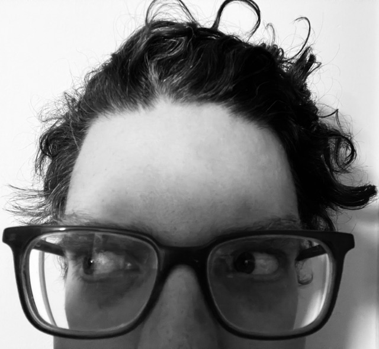

Welcome
My name is Brian Kagel and I've been an amateur musician and recording engineer for close to two decades now. I started on a Zoom MRS8 digital 8-track machine and eventually moved onto laptop studio programs like Garageband, Studio One, and Adobe Audtion. I play guitar, bass, keyboard/synth, percussion, programmable drums and am learning banjo and lap steel guitar and singing saw. I graduated from the University of Illinois Urbana-Champaign in 2009 with a degree in English and Creative Writing and decided to go back to school for Audio and Music Production when I saw that Illinois State University had started a Creative Techonologies Department.
